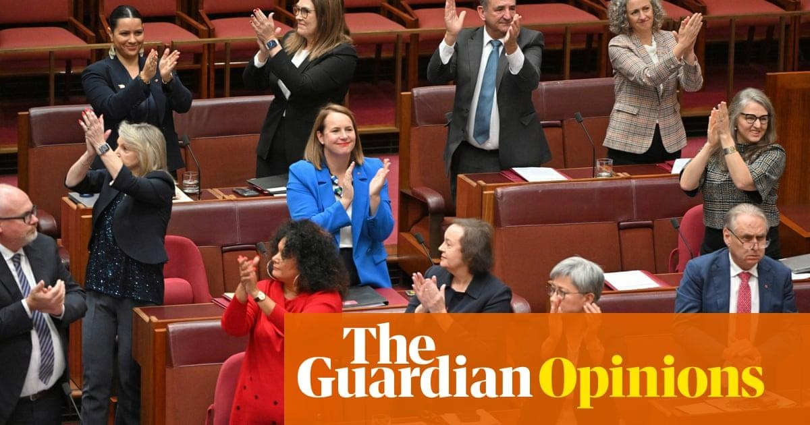

Over to you, Australia: Indigenous campaigners hope voice debate is now respectful, not racist“Parliament’s work is done,” Greens senator and Yamajti-Noongar woman Dorinda Cox said on Monday morning, amid fiery scenes in parliament before the historic passage of the voice referendum bill. It’s now up to the Australian people to decide whether or not to enshrine in the constitution an Indigenous voice to parliament. The referendum is expected to be held in October. Many key yes campaigners were in the public gallery to witness a turning point for the nation. They were no doubt relieved the question was settled and the official campaign can begin – well away from Canberra. It’s unusual for there to be third-reading speeches of legislation – but this was no ordinary day in parliament. The Coalition and other voice opponents seized the opportunity to have one last crack at the voice on its way through the upper house. Most of their arguments have been well-ventilated over the past few months: the voice is risky, unknown, divisive and permanent. Some of those claims were “bordering on misinformation, if not already in that territory,” Senator David Pocock said. Independent senator and DjabWurrung Gunnai Gunditjmara woman Lidia Thorpe wore a “gammin’” T-shirt and explained why she could not vote for a “powerless” advisory body to the colonial institution of government. “Happy assimilation day,” Thorpe said in her opening remarks. “Another day in the colony” she called out later as the Senate divided and votes were counted. Labor senator Murray Watt said it was “a day as big as Uluru” while Malarndirri McCarthy, the assistant minister for Indigenous Australians, called for dignity and respect in the coming debate. “I ask all Australians, as we walk this sacred journey, [to show] the utmost respect for one another,” McCarthy said. Keeping the debate respectful is what many Aboriginal and Islander people are most worried about. First Nations people know how easily any debate about us can turn racist – we know there is the potential for increased threats to our physical and mental safety between now and October. We wonder whether our country will be safe for us beyond the referendum – especially if the no vote wins. Cox is right. Parliament’s work is done but it isn’t finished with the voice. There are more public battles to come as politicians jockey to have their views reflected in the publication of the “yes” and “no” pamphlets. Opponents of the voice – who Watt accused on Monday of “making stuff up” – will have many more chances to ventilate their concerns – real and imagined. But for today, there is a celebration of another milestone reached on the road to recognition. Uluru dialogues co-chair and Alyawarre woman Pat Anderson said she had a fundamental belief “you will all do the right thing at the right time”. “The Australian people will decide what sort of a country we are, what do we stand for, what are our values, who are we? That is what we will vote on soon,” Anderson said. The prime minister, Anthony Albanese, later issued a challenge to the nation: “Parliaments pass laws, but people make history.” Albanese on Monday said he had faith in the public. So, over to you, Australia. |
 |